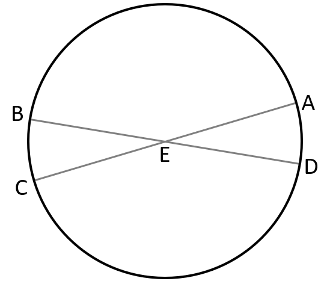
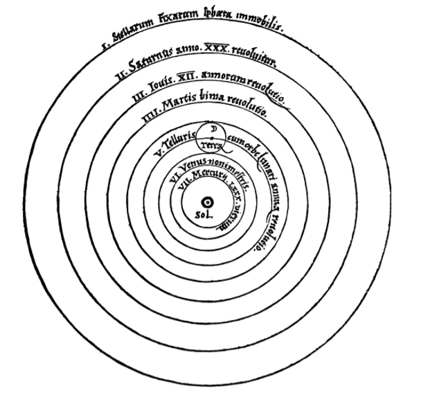
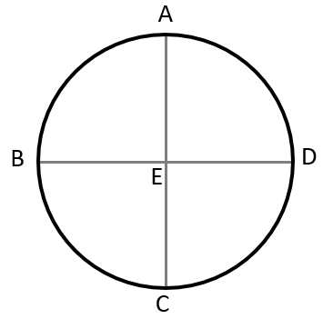
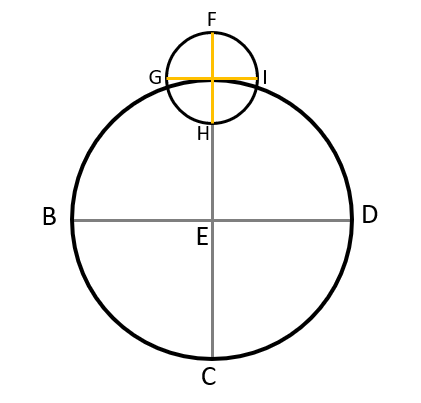
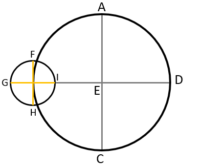
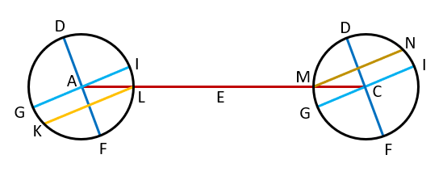

The Earth centered, or geocentric, model of the solar system was developed by Aristotle around 350 B.C. and elaborated by Claudius Ptolemy of Alexandria around 150 A.D. There had been other mathematicians like the Pythagorean Philolaus who argued for a Sun centered, heliocentric, model of the solar system however the Aristotelians prevailed and Sun centered models of the solar system were forgotten for fifteen centuries.
Ptolemy outlined his system in a treatise which has become known as the Almagest, meaning "the greatest." In the Ptolemaic system, each planet moved in a small circle known as an epicycle, whose centre was carried round the Earth in a larger orbit known as the deferens. For fourteen centuries astronomers computed planetary positions from tables based on this analysis.
Astronomy made no major advances in strife-torn medieval Europe; but then, during the renaissance period, astronomy began to undergo a revolution in thought known as the Copernican revolution, which gets the name from the astronomer Nicolaus Copernicus, who proposed a heliocentric system, in which the planets revolved around the Sun and not the Earth. His book "De Revolutionibus Orbium Coelestium" was published in 1543. While in the long term this was a very controversial claim, in the very beginning it only brought minor controversy. The theory became the dominant view because many figures, most notably Galileo Galilei, Johannes Kepler and Isaac Newton championed and improved upon the work.
Nicolaus Copernicus was a Polish cleric in the sixteenth century. He was born on February 19, 1473, in Torun, a mercantile town along the Vistula River. His training was in law and medicine, but his main interests were astronomy and mathematics. It is impossible to date when Copernicus first began to espouse the heliocentric theory, but it is likely that he adopted this theory after 1500. His first heliocentric writing was his Commentariolus ("Little Commentary"). It was a small manuscript that was circulated but never printed. Thereafter he continued gathering data for a more detailed work.
The Commentariolus was only intended as an introduction to Copernicus’s ideas. In a sense it was an announcement of the greater work that Copernicus had begun. About 1532, Copernicus had basically completed his work on the manuscript of "De revolutionibus orbium coelestium" (On the Revolutions of the Celestial Spheres). The work is divided into six books, where the first one is a general vision of the heliocentric theory, so it would be sufficient to give a summary of his first book.
The Universe is Spherical:
First of all, we must note that the universe is spherical. The reason is either that, of all forms, the sphere is the most perfect, needing no joint and being a complete whole; or because it is most capacious and therefore best suited for that which is to contain and preserve all things; or again because all the perfect parts of it, namely, Sun, Moon and Stars, are so formed; or because all things tend to assume this shape, as is seen in the case of drops of water and liquid bodies in general if freely formed. No one doubts that such a shape has been assigned to Heavenly bodies.
The Earth too is Spherical:
The earth also is spherical, since it presses upon its center from every direction. A traveler going from any place toward the north, that pole of the daily rotation gradually climbs higher, while the opposite pole drops down an equal amount. More stars in the north are seen not to set, while in the south certain stars are no longer seen to rise. Thus Italy does not see Canopus, which is visible in Egypt. Meanwhile, the elevations of the poles have the same ratio everywhere to the portions of the earth that have been traversed.
The waters press down into the same figure also, as sailors are aware, since land which is not seen from a ship is visible from the top of its mast. On the other hand, if a light is attached to the top of the mast, as the ship draws away from land, those who remain ashore see the light drop down gradually until it finally disappears, as though setting.
The motion of the heavenly bodies is uniform, eternal, and circular or compounded of circular motions:
We must now note that the motion of the heavenly bodies is circular. In connection with the numerous [celestial] spheres, however, there are many motions. The most conspicuous of all is the daily rotation, which the Greeks call nuchthemeron, that is, the interval of a day and a night. The entire universe, with the exception of the earth, is conceived as whirling from east to west in this rotation.
Secondly, we see other revolutions as advancing in the opposite direction, that is, from west to east; I refer to those of the sun, moon, and five planets. The sun thus regulates the year for us, and the moon the month, which are also very familiar periods of time. In like manner each of the other five planets completes its own orbit.
Yet [these motions] differ in many ways. These bodies are not seen moving uniformly in their orbits, since the sun and moon are observed to be sometimes slow, at other times faster in their course. Moreover, we see the other five planets also retrograde at times, and stationary at either end [of the regression].
Nevertheless, despite these irregularities, we must conclude that the motions of these bodies are ever circular or compounded of circles, because these non-uniformities recur regularly according to a constant law. This could not happen unless the motions were circular, since only the circle can bring back the past.
A simple heavenly body cannot be moved by a single sphere nonuniformly. For this nonuniformity would have to be caused either by an inconstancy, whether imposed from without or generated from within, in the moving force or by an alteration in the revolving body. It is improper to conceive any such defect in objects constituted in the best order. It stands to reason, therefore, that their uniform motions appear nonuniform to us. The cause may be either that their circles have poles different [from the earth’s] or that the earth is not at the center of the circles on which they revolve.
Does circular motion suit the earth? What is its position?:
There is general agreement among the authorities that the earth is at rest in the middle of the universe. They hold the contrary view to be inconceivable or downright silly. Nevertheless, if we examine the matter more carefully, we shall see that this problem has not yet been solved.
Every observed change of place is caused by a motion of either the observed object or the observer or, it is caused by an unequal displacement of each. For when things move with equal speed in the same direction, the motion is not perceived between the observed object and the observer. If some motion is ascribed to Earth, the same motion will appear in all that is exernal to Earth, but in the opposite direction. Such in particular is the daily rotation, since it seems to involve the entire universe except the earth and what is around it. However, if you grant that the heavens have no part in this motion but that the earth rotates from west to east, you will find that this is the actual situation concerning the apparent rising and setting of the sun, moon, stars and planets. This view was certainly that of Heraclides and Ecphantus the Pythogorean and Hicetas of Syracuse (according to Cicero); for they thought that the stars set because the Earth blocked the view of them.
There is another difficulty, namely, the position of the Earth. There has been virtually unanimous acceptance of the belief that the middle of the universe is the earth. Now, grant that Earth is not at the exact centre but at a distance from it which, while small compared to the sphere of the fixed stars, is yet considerable compared to the orbits of Sun and the other planets; then calculate the consequent variations in their seeming motions, assuming these to be really uniform and about the some centre other than the Earth's. One may then perhaps adduce a reasonable cause for these variable motions. The fact that the same planets are observed nearer to the earth and farther away necessarily proves that the center of the earth is not the center of their circles. It is less clear whether the approach and withdrawal are executed by the earth or the planets.
The Vastness of the Heavens Compared to the Size of the Earth:
Let the circle ABCD represent the celestial horizon, and E be the point from which we observe.
Suppose that from point E we observe with Dioptra or Astrolabe the first point of the sign Cancer rising at C and at the same moment the first point of Capricorn setting at A. AEC, since it is observed as a straight line through Dioptra, is a diameter of the Ecliptic, for six Zodiacal Signs form a semicircle and its centre E coincides with the centre the horizon.
Next, suppose that after some time the first point of Capricorn rises at B; then Cancer will be seen setting at D, and BED will be a stright line, a diameter of the ecliptic. Hence, it is clear that E, the point of intersection of the two lines, is the centre of the horizon. Therefore the horizon always bisects the ecliptic.
Yet a line drawn from the earth's surface [to a point in the firmament] must be distinct from the line drawn from the earth's center [to the same point]. Nevertheless, because these lines are immense in relation to the earth, they become like parallel lines. For in comparison with their length the space enclosed by them becomes imperceptible.
It therefore follows that the Heavens are immeasurable in comparison with the Earth. Thus the Earth appears as a mere point compared to the Heavens, as a finite thing to the infinite. Yet it does not follow that the Earth must be at rest at the centre of the Universe. Indeed, a rotation in twenty-four hours of the enormously vast universe should astonish us even more than a rotation of its least part, which is the earth.
The argument that the center is motionless, and what is nearest the center moves the least, does not prove that the earth is at rest in the middle of the universe. Suppose you say that the heavens rotate but the poles are stationary, and what is closest to the poles moves the least. The Little Bear, for example, being very close to the pole, is observed to move much more slowly than the Eagle or the Little Dog because it describes a smaller circle. Yet all these constellations belong to a single sphere. These are brought round in equal times, though not over equal spaces, by the rotation of the whole sphere. The upshot of the argument, then, is the claim that the earth as a part of the celestial sphere shares in the same nature and movement so that, being close to the center, it has a slight motion. Therefore, being a body and not the center, it too will describe arcs like those of a celestial circle, though smaller, in the same time. The falsity of this contention is clearer than daylight. For it would always have to be noon in one place, and always midnight in another, so that the daily risings and settings could not take place, since the motion of the whole and the part would be one and inseparable.
A quite different theory is required to explain the various motions observed, namely the bodies moving in smaller paths revolve more quickly than those moving in larger paths. Thus Saturn, most distant of the Planets, revolves in 30 years, and Moon, nearest Earth, compasses her circuit in a month. Lastly, then, the Earth must be taken to go round in the course of a day and a night.
Why the ancients thought that the earth remained at rest in the universe as its center:
The most powerful argument was drawn by the doctrine of the heavy and the light. Earth is in fact the heaviest element, and everything that has weight is borne toward it in an effort to reach its inmost center. The Earth is spherical, and all heavy things would rush together to the centre if not stopped at the surface. If they were not checked at its surface, they would collide at its center, since a straight line perpendicular to a horizontal plane at its point of tangency with a sphere leads to the center. Things brought to the middle, it seems to follow, come to rest at the middle. All the more, then, will the entire earth be at rest in the middle. Receiving all falling bodies, it will remain immovable by its won weight.
Aristotle says that the motion of a single and simple body is simple. A simple motion may be either straight, or circular. Again a straight motion may be either up or down. So every simple motion must be either toward the centre, namely downward, or away from the centre, namely upward, or round the centre, namely circular. Now it is a property only of the heavy elements earth and water to move downward, that is to seek the centre. But the light elements air and fire move upward away from the centre. Therefore we must ascribe rectilinear motion to these four elements.
If then, says Ptolemy, Earth moves at least with a diurnal rotation, the result must be reverse of that described above. For the motion must be of excessive rapidity, since in 24 hours it must impart a complete rotation to the Earth. Now things rotating very rapidly resist cohesion or, if united, going to fly apart, unless firmly held together. Ptolemy therefore says that Earth should have been dissipated long ago. Also, all living creatures and other heavy bodies free to move could not have remained on its surface, but must be shaken off. Neither could falling objects reach their appointed place vertically beneath, since in the meantime the Earth would have moved swiftly from under them. Moreover clouds and everything in the air would continually move westward.
The inadequacy of the previous arguments and a refutation of them:
For these and similar reasons forsooth the ancients insist that the earth remains at rest in the middle of the universe, and that this is its status beyond any doubt. Yet if anyone believes that the earth rotates, surely he will hold that its motion is natural, not violent; what is in accordance with nature produces effects contrary to those resulting from violence, since things to which force or violence is applied must disintegrate and cannot long endure. On the other hand, that which is brought into existence by nature is well-ordered and preserved in its best state. Ptolemy has no cause, then, to fear that the earth and everything earthly will be disrupted by a rotation created through nature's handiwork, which is quite different from what art or human intelligence can accomplish.
If then, says Ptolemy, Earth moves at least with a diurnal rotation, the result must be reverse of that described above. For the motion must be of excessive rapidity, since in 24 hours it must impart a complete rotation to the Earth. Now things rotating very rapidly resist cohesion or, if united, going to fly apart, unless firmly held together. Ptolemy therefore says that Earth should have been dissipated long ago. Also, all living creatures and other heavy bodies free to move could not have remained on its surface, but must be shaken off. Neither could falling objects reach their appointed place vertically beneath, since in the meantime the Earth would have moved swiftly from under them. Moreover clouds and everything in the air would continually move westward.
Why does he not feel this apprehension even more for the universe, whose motion must be the swifter, the bigger the heavens are than the earth? Have the Heavens become so vast because of the centrifugal force of their violent motion, and would they collapse if they stood still? Were this reasoning sound, surely the size of the heavens would likewise grow to infinity. For the higher they are driven by the power of their motion, the faster that motion will be, since the circumference of which it must make the circuit in the period of twenty-four hours is constantly expanding; and, in turn, as the velocity of the motion mounts, the vastness of the heavens is enlarged. In this way the speed will increase the size, and the size the speed, to infinity. Yet according to the familiar axiom of physics that the infinite cannot be traversed or moved in any way, the heavens will therefore necessarily remain stationary.
Beyond the heavens there is said to be no body, no space, no void, absolutely nothing, so that there is nowhere the heavens can go. In that case it is really astonishing if something can be held in check by nothing. Why then do we still hesitate to grant it the motion appropriate by nature to its form rather than attribute a movement to the entire universe, whose limit is unknown and unknowable? Why should we not admit, with regard to the daily rotation, that the appearance is in the heavens and the reality in the earth? For when a ship is floating calmly along all external things seem to have the motion that is really that of the ship, while those within the ship feel that they and all its contents are at rest. The motion of the earth can unquestionably produce the impression that the entire universe is rotating.
What about the clouds and the other things that hang in the air in any manner whatsoever, or the bodies that fall down, and conversely those that rise aloft? We would only say that not merely the earth and the watery element joined with it have this motion, but also no small part of the air and whatever is linked in the same way to the earth. The reason may be either that the nearby air, mingling with earthy or watery matter, conforms to the same nature as the earth, or that the air’s motion, acquired from the earth by proximity, shares without resistance in its unceasing rotation. The air closest to the earth will accordingly seem to be still. And so will the things suspended in it, unless they are tossed to and fro, as indeed they are. For what else is the wind in the air but the wave in the sea?
As a quality, moreover, immobility is deemed nobler and more divine than change and instability, which are therefore better suited to the earth than to the universe.
Can several motions be attributed to the earth?:
Since nothing prevents the earth from moving, I suggest that we should now consider also whether several motions suit it, so that it can be regarded as one of the planets. For, it is not the center of all the revolutions. This is indicated by the planet's apparent nonuniform motion and their varying distances from the earth. These phenomena cannot be explained by circles concentric with the earth.
If, therefore, the Earth also has other motions, for example, about a center, these must necessarily resemble the many outside motions having a yearly period. If we take the Sun to be at rest, then morning and evening settings of Stars will be unaffected, while the stationary points, retrogressions, and progressions of the Planets are due not to their own proper motions, but to that of the Earth, which they reflect.
The order of the heavenly spheres:
Of all things visible, the highest is the heaven of the fixed stars. But the ancient philosophers wanted to arrange the planets in accordance with the duration of the revolutions. Their principle assumes that of objects moving equally fast, those farther away seem to travel more slowly. The moon revolves in the shortest period of time because, in their opinion, it runs on the smallest circle as the nearest to the earth. The highest planet, on the other hand, is Saturn, which completes the biggest circuit in the longest time. Below it is Jupiter, followed by Mars.
With regard to Venus and Mercury, however, differences of opinion are found. For, these planets do not pass through every elongation from the sun, as the other planets do. Hence Venus and Mercury are located above the sun by some authorities, like Plato in his Timaeus, but below the sun by others, like Ptolemy and many of the moderns. Al-Bitruji places Venus above the sun, and Mercury below it.
On the other hand, those who locate Venus and Mercury below the sun base their reasoning on the wide space which they notice between the sun and the moon. They do not admit that these heavenly bodies have any opacity like the moon's. On the contrary, these shine either with their own light or with the sunlight absorbed throughout their bodies. Moreover, they do not eclipse the sun, because it rarely happens that they interfere with our view of the sun, since they generally deviate in latitude. Besides, they are tiny bodies in comparison with the sun. Ibn Rushd reports having seen a kind of black spot when investigating the numerical relations between the Sun and Mercury. This is the evidence that these two planets are nearer than the Sun.
Ptolemy argues also that the sun must move in the middle between the planets which show every elongation from it and those which do not. This argument carries no conviction because its error is revealed by the fact that the moon too shows every elongation from the sun.
We must seriously consider the ingenious view held by Martianus Capella, that Venus and Mercury do not go round the Earth like the other planets but run their courses with the Sun as centre, and so do not depart from him further than the size of their orbits allows. What else can they mean than that the centre of these orbits is near the Sun? Thus Mercury's sphere will surely be enclosed within the sphere of Venus, which by common consent is more than twice as big.
As for the outer planets, they are always closest to the earth, as is well known, when they are in opposition to the sun, with the earth between them and the sun. On the other hand, they are at their farthest from the earth, when they become invisible in the vicinity of the sun, namely, when we have the sun between them and the earth. Since all these have one centre, it is necessary that the space between the orbit Venus and the orbit of Mars must be viewed as a Sphere concentric with the others, capable of receiving the Earth with her satellite the Moon.
We therefore assert that the centre of the Earth, carrying the Moon's path, passes in a great orbit among the other planets in an annual revolution round the Sun, and that near the Sun is the centre of the Universe; whereas the Sun is at rest, any apparent motion of the Sun can be explained by motion of the Earth. Yet so great is the Universe that though the distance of the Earth from the Sun is not insignificant compared with the size of any other planetary path, in accordance with the ratios of their sizes, it is insignificant compared with the distance of the Sphere of Fixed Stars.
The first and the highest of all is the sphere of the fixed stars, which contains itself and everything, and is therefore immovable. The sphere of the fixed stars is followed by the first of the planets, Saturn, which completes its circuit in 30 years. After Saturn, Jupiter accomplishes its revolution in 12 years. Then Mars revolves in 2 years. The annual revolution takes the series fourth place, which contains the earth. In the fifth place Venus returns in 9 months. Lastly, the sixth place is held by Mercury, which revolves in a period of 80 days.
We may observe why the progression and retrogression appear greater for Jupiter than for Saturn, but again greater for Venus than in Mercury.
Proof of the earth's triple motion:
The first motion, is the rotation which is the characteristic of a day plus a night. This turns around the earth's axis from west to east, just as the universe is deemed to be carried in the opposite direction.
The second is the yearly motion of the center, which traces the ecliptic around the sun. It travels between Venus and Mars, and because of it, the sun seems to move through the zodiac. For instance, when the centre of the Earth passes over Capricorn, as seen from the Sun, the Sun appears to pass over Cancer as seen from Earth. The equator and Earth's axis are variably inclined to this circle, which passes through the middle of the Zodiac, since if they were fixed and followed simply the motion of the Earth's centre there would be no inequality of days and nights.
The third motion in inclination is consequently required. This also is a yearly revolution, but it occurs in the reverse order of the signs, that is, in the direction opposite to that of the motion of the center. These two motions are opposite in direction and nearly equal in period. Let us describe a circle ABCD, which the annual revolution of the earth's center has traced in the plane of the ecliptic. Near its center let the sun be E. Now divide this circle into four parts by drawing the diameters AEC and BED. Let the first point of Cancer be at A, of Libra at B, of Capricorn at C and of Aries at D.
Now let the centre of the Earth be first at A and round it draw the terrestrial equator FGHI.
This is not in the same plane [as the ecliptic], except that the diameter GAI is the intersection of the circles, meaning, of the equator and the ecliptic. The diameter FAH is perpendicular to GAI, F being the limit of the [equator's] greatest inclination to the south, and H to the north. The inhabitants of the Earth will see the Sun at its winter solstice in Capricorn. Hence in the diurnal rotation the inclination of the equator to AE makes the Sun move along the Tropic of Capricorn. Now let the centre of the Earth travel foruvards and let F, move in the reverse order until both have completed quadrants of their circles at B.
Therefore, from the first point of Libra, E will appear to be in Aires. Accordingly the sun will be seen in the spring equinox.
Let the earth's center proceed under the assumed conditions, and when it has completed a semicircle at C, the Sun will appear to be entering Cancer. F, the point of greatest southern declination of the Equator, is now turned towards the Sun, and it will appear to be running along the Tropic of Cancer. This will be made to appear in the north, undergoing the summer solstice.
Let AEC be in the same way a diameter of the plane under discussion [the ecliptic].
On AEC, around A and C, that is, in the Cancer and the Capricon, draw a circle of the earth in each case through the poles. Let this be DGFI, the earth's axis DF, the north pole D, the south pole F, and GI the diameter of the equator.
Now when F is turned toward the sun, which is near E, the equator’s northward inclination being measured by the angle IAE, then the axial rotation will describe, parallel to the equator and to the south of it, at a distance LI and with diameter KL, the tropic of Capricorn as seen in the sun. Also at the opposite point, C, everything works out in like manner, but is reversed.
The annual revolutions of the center and of inclination are nearly equal. For if they were exactly equal, the equinoctial and solstitial points as well as the entire obliquity of the ecliptic would have to show no shift at all with reference to the sphere of the fixed stars. From Ptolemy to us the precession of the equinoxes amounts to almost 21°.
Sources: